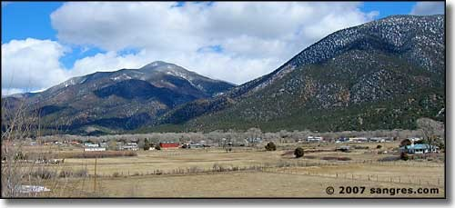
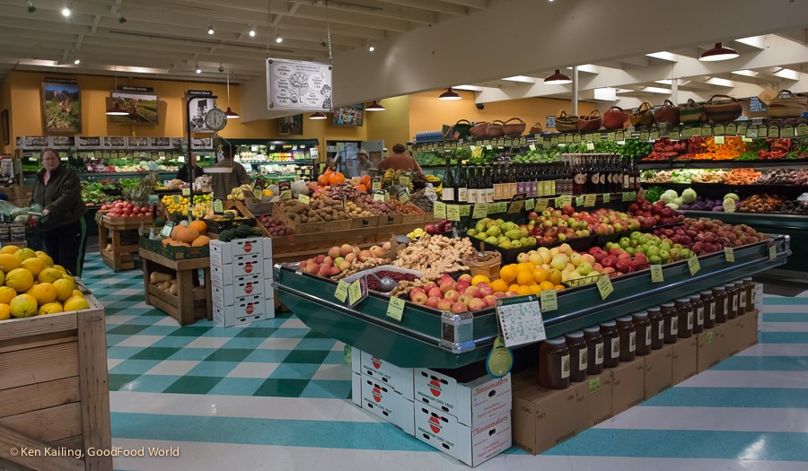
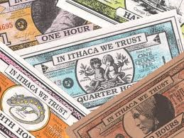
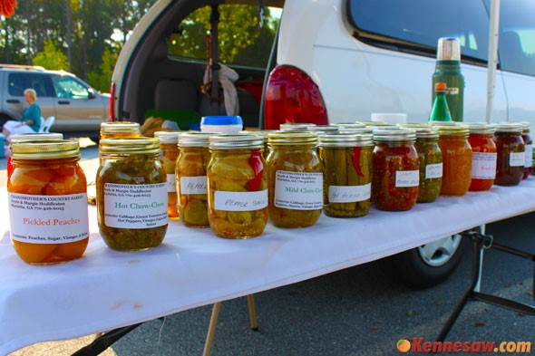

100 Questeros
Questanos already know the importance of cooking meals and growing their own food. But why are we driving out of town to buy food when we have so much farmland right here in Questa? We can create a local food hub in Questa composed of farmers working together with markets, restaurants, and community members.
A food coop is a farmers market or grocery store owned by the local community that offers healthy food grown by local community members.
A local food coop is a great way to instill a sense of community and cooperation between local growers and citizens - it also keeps money in the local economy.
We propose, in addition to this coop, a local virtual currency that can be earned by residents of Questa for rendering services around the community. When people donate their time, they can then use their earned “Questaros” at local businesses in Questa.
When people earn Questaros, they are deposited into an online profile. Accessible through a smartphone app, people can transfer Questeros to each other based on an agreed upon price for goods or services. It would work similarly to a credit card, but would encourage people to spend locally and give back to the community
In order to build a stronger local community of Questanos, we can use all of these tools to bring people together and celebrate our heritage and unique culture. The Questero app can be used to keep business local and to grow the economy (Questanos buying from Questanos) catalyzed by the founding of a food hub where growers and the community can come together and share.